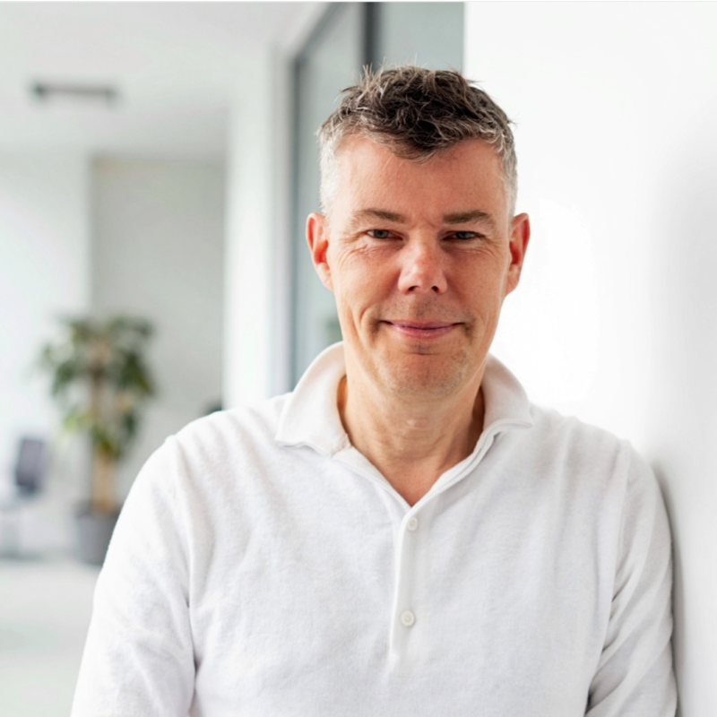
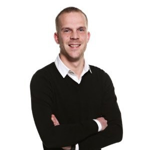

Als testspecialisten pakken we het hele traject op: van het doorgronden van requirements tot het opzetten van geautomatiseerde regressietesten die nacht na nacht stille zekerheid bieden. We wachten niet tot er een takenlijst klaarligt, maar denken actief mee over wat er beter kan in jouw IT-omgeving.
Concreet betekent dat: requirements en documentatie omzetten naar scherpe testscenario's, die uitvoeren, bevindingen vastleggen en samen met het dev-team opvolgen, hertesten, en vervolgens de kwaliteit van bestaande functionaliteit borgen met moderne tooling zoals Cypress.io, Playwright of Robot Framework.
Gecertificeerd in ISTQB CTFL, Agile Tester Extension, TMAP en/of PSM-1Maak kennis met ons team

Onno La Roi
Eigenaar | Testspecialist
Bio volgt nog.

Stefan de Boeff
Testspecialist
Bio volgt nog.
Marco Picavet
Testspecialist
Bio volgt nog.
Sergio Brondenstein
Testspecialist
Bio volgt nog.
Eric L. van den Brink
Testspecialist
Geboren Amsterdammer, maar na genoeg omzwervingen definitief gestrand in Den Haag. Heeft ooit netjes een journalistieke opleiding afgerond, en koos vervolgens voor de IT. Eric overtuigt organisaties met plezier van de kracht van testautomatisering, en heeft net zo veel lol aan exploratief testen waarbij je nog niet precies weet wat je gaat vinden. Per september 2026 begint hij ook nog aan een deeltijdstudie ICT aan de Haagse Hogeschool. Sinds 2023 werkzaam voor Testspecialist.nl.